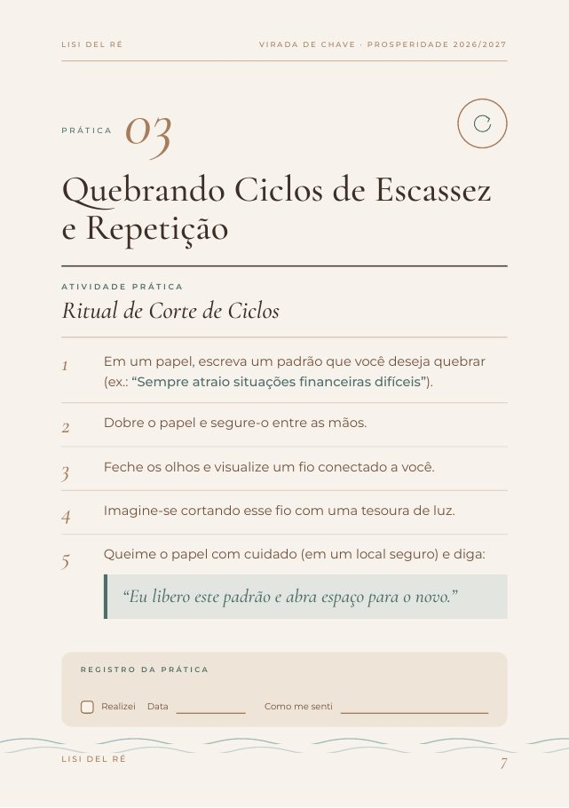
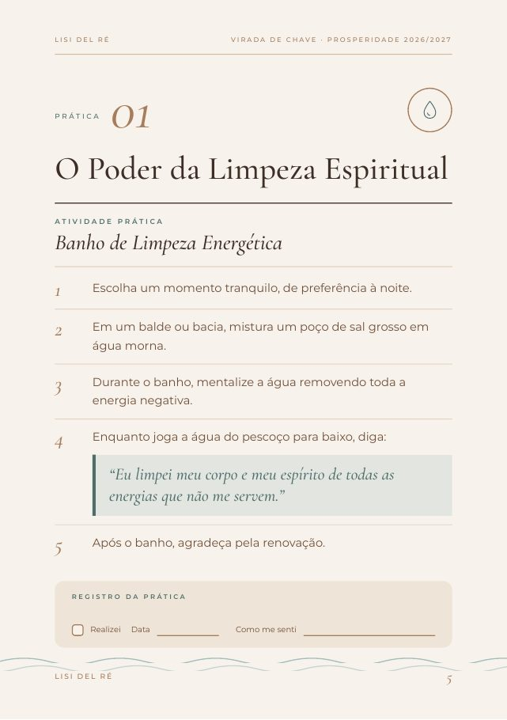
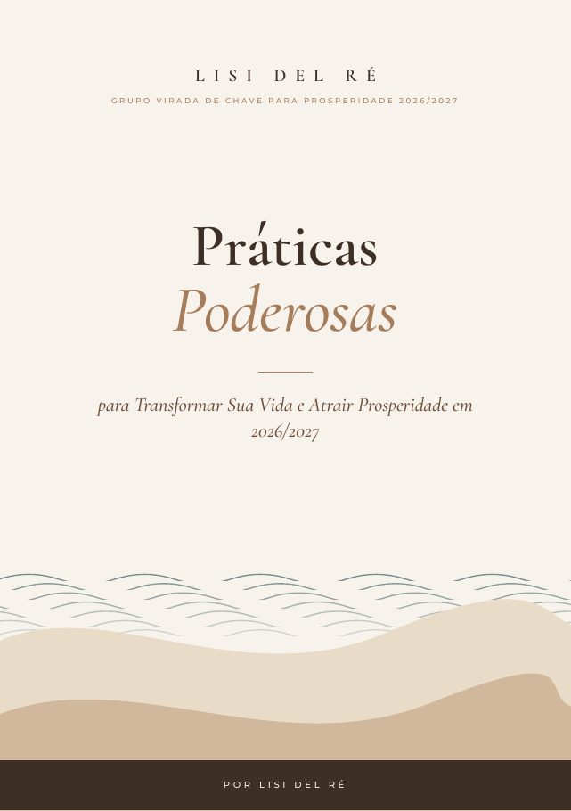

E-book com o passo a passo de cada prática e as frases para dizer em voz alta, mais um caderno de afirmações para acompanhar tudo. Para fazer em casa, no seu ritmo, a começar hoje.



E se existisse um jeito simples de recomeçar, só com o seu corpo, a sua respiração e a sua intenção?
Cada página foi pensada para você fazer, não só entender. Abriu, escolheu, praticou, registrou.
Instruções curtas e numeradas, sem teoria longa antes de chegar no que importa.
Itens simples, que você provavelmente já tem em casa: sal grosso, vela, papel e caderno.
Cada prática traz a frase de poder pronta, destacada na página, para dizer em voz alta.
Um espaço em cada prática e um caderno inteiro para acompanhar como você se sentiu.
Veja o sumário e comece pela que mais conversa com o seu momento.
De 3 a 7 passos curtos, com itens simples como sal grosso, vela, papel e caderno.
Fale a frase de poder em voz alta e anote como se sentiu no caderno.
Para imprimir e usar ao lado do e-book:
As frases de poder de cada prática em cartões, para deixar por perto e repetir sempre que precisar: na carteira, no espelho, na mesa de cabeceira.
Se você abrir o material e sentir que não é para você, peça o reembolso em até 7 dias após a compra.
Em poucos minutos, na página segura de pagamento.
O acesso chega assim que o pagamento é confirmado.
No celular, no tablet ou no computador.
Escolha a primeira prática e imprima o caderno, se quiser.
Assim que o pagamento é confirmado, você recebe no seu e-mail o acesso ao e-book e aos bônus em PDF. Confira também a caixa de spam e a aba de promoções.
Não. As práticas usam itens simples, como sal grosso, vela, papel e caderno. A maioria você provavelmente já tem em casa.
Sim. O PDF abre no celular, no tablet ou no computador. O caderno e os cartões de fala foram pensados para imprimir, mas você pode usar um caderno comum se preferir.
Não. Veja o sumário e comece pela prática que mais conversa com o seu momento. Você pode repetir as que fizerem mais sentido para você.
Sim. Cada prática tem passos curtos e numerados e a frase pronta para dizer. Não é preciso experiência anterior.
Não. As práticas têm caráter espiritual e de desenvolvimento pessoal e não substituem acompanhamento médico, psicológico, jurídico ou financeiro.
Você tem 7 dias de garantia. Se abrir o material e sentir que não é para você, é só pedir o reembolso dentro desse prazo.
13 práticas guiadas, o caderno de afirmações e os cartões de fala, por um valor único e com 7 dias de garantia.
Quero as Práticas Poderosas por R$ 47 PDF com acesso imediato · Pagamento único